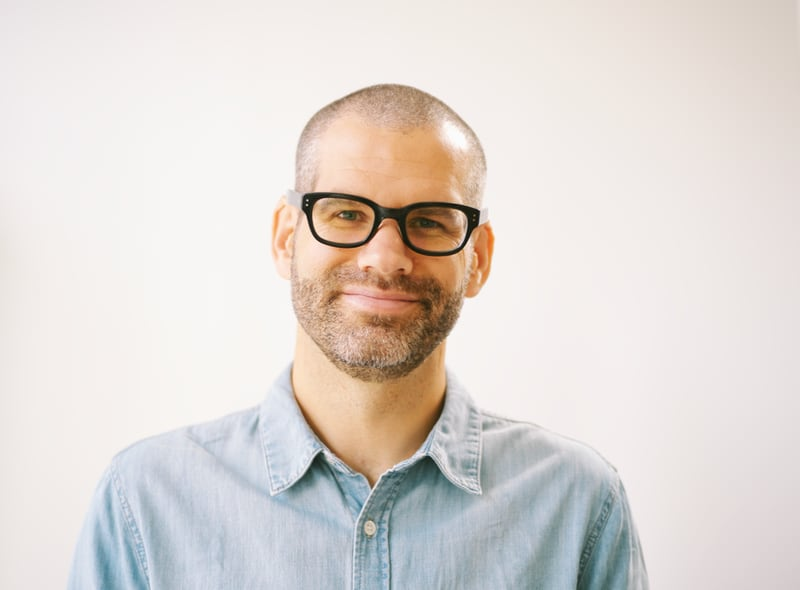
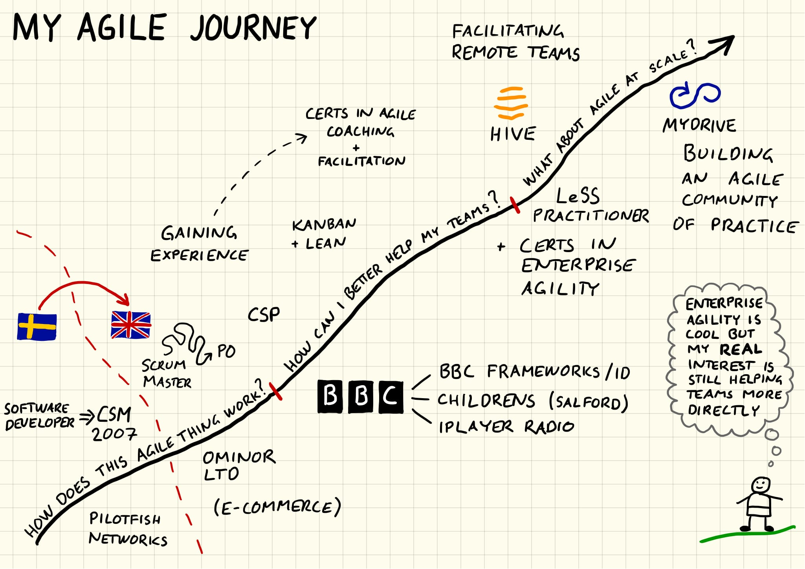
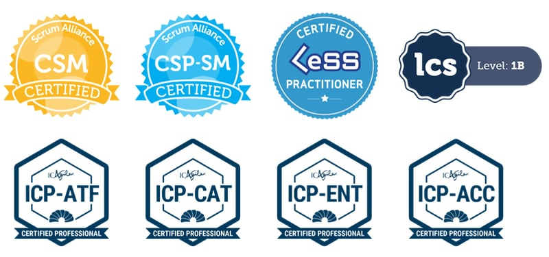

🙋🏻♂️ Available
I will be available from 2 January for Agile Team Coach / Scrum Master assignments, remote or in London.I’ve been helping teams get more out of agile and Scrum since 2007. Let me help you too!
My name is Magnus Dahlgren and I’m a freelance Agile Team Coach & Facilitator based in London, UK.
Using the experiences and insights I have gained from more than than a decade as a Scrum Master and agile team coach in companies ranging from small startups to the BBC, I am excited to now offer my services on a short-term freelance basis.
My services and how I can help you
Agile facilitation
As an experienced and certified agile facilitator, I love creating and running effective workshops and meetings that deliver results. Some examples of sessions I can help you with are:
- team initiations / kick-offs
- sprint planning meetings & reviews
- sprint or project retrospectives
- user story mapping
- bespoke workshops and meetings based on your specific needs
Send me an email to discuss what outcomes you are aiming for and I can tell you more about how I can help you.
Agile Coaching and mentoring
I can help your team find ways of working that work for them and set them off on their journey of continuous improvement. I’m passionate to help teams move beyond “agile as a checklist” to understanding and applying the underlying ideas and principles.
I also offer 1:1 coaching and mentoring of Scrum Masters or agile team members, who are either new in their roles or are looking to grow.
“Magnus knows scrum inside out and turned a team that was limping along into a successful and innovative one, which many other teams within the company looked to for guidance and examples.”
Short-term Scrum Master
Is your Scrum Master away and you need some temporary cover? Or do you need a Scrum Master for the duration of a short project? Or would the team benefit from an experienced Scrum Master for the first few sprints when they are just getting started with Scrum?
I have more than a decade of Scrum Master experience and can help you!
On-site or remotely?
It is hard to beat a co-located team or a workshop, where everyone is in the same room together. However, with team members looking for flexible working and companies not wanting to limit their talent pool to one city or country, it is getting increasingly common with partially or fully distributed teams. And it is possible to make it work! I have facilitated teams spread up to 4 different timezones, helping them become jelled, high-performing teams.
More about me and my background
I started out as a software developer but have been working as a Scrum Master and Agile Coach in some shape or form for the past 12 years. I love helping teams deliver awesome products, supporting them and those around them in finding approaches and ways of working that work for them.What I’ve done so far
- Magnus Dahlgren Enterprises (since 2019). Starting November 2019, I’m offering freelance Agile Team Coach and Fafilitator services on a short-term basis, helping teams make more of agile & Scrum.
- MyDrive Solutions (2018 - 2019). In my most recent full-time role as Agile Coach, I supported several teams and built an Agile Community of Practice to help spreading a deeper agile understanding across the company.
- Hive (2017 - 2018). As a Scrum Master on a contract basis, I initiated a new team in a new product area and helped them become a productive and jelled team despite being spread across 4 timezones.
- BBC (2010 - 2017). I had the pleasure of working with several different teams around the corporation as a Scrum Master, helping them deliver services that millions of users care very passionately about.
- Ominor Ltd (2007 - 2010). I learned a lot during my time at this e-commerce agency, starting as a scrum master and ending up as a product owner.
- Pilotfish Networks (2004 - 2007). My first real job was as a Java developer back in my native Sweden. After a couple of years, I took the step to become a project manager. Soon thereafter I came across a better way of working called ’agile’ and took my Certified Scrum Master in 2007.
My qualifications
- Certified Scrum Professional – CSP-SM (only 1% of CSMs hold this certification)
- Advanced Certified Scrum Master – A-CSM
- Certified Scrum Master – CSM (I’ve held this certification longer than 95% of other CSMs)
- LeSS Practitioner – Large Scale Scrum
- Coaching Agile Transitions – ICAgile Certified Professional – ICP-CAT
- Agility in the Enterprise – ICAgile Certified Professional – ICP-ENT
- Agile Coaching – ICAgile Certified Professional – ICP-ACC
- Agile Team Facilitation – ICAgile Certified Professional – ICP-ATF
- Lean Facilitator – LCS Level 1b
And my Master of Science in Computer Science and Engineering (MSc) provides me with a reasonably sound technical understanding.
Let’s work together!
🙋🏻♂️ Available
I will be available from 2 January for Agile Team Coach / Scrum Master
assignments, remote or in London.
🙋🏻♂️ Available
I will be available from 2 January for Agile Team Coach / Scrum Master assignments, remote or in London.Don’t hesitate to get in touch with me if you are interested in how I may be able to help you, or if you have feedback or comments on anything I’ve published on this blog.
Ways of contact:
- Email: me@magnusd.cc ⭐️ (best method)
- Linkedin: magnusdahlgren
- Twitter: @magnusdahlgren